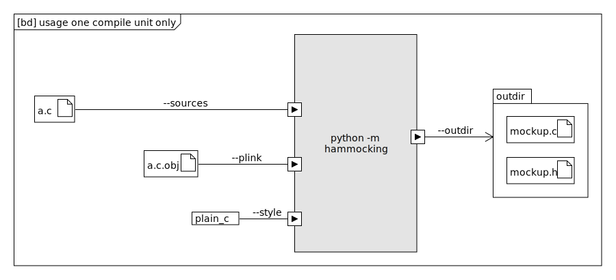
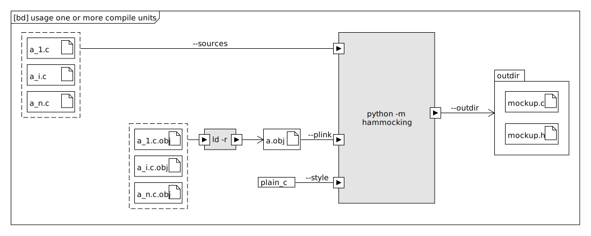

Usage
Command line
Before we integrate it into the build chain of your choice it is a good idea to call it on the command line in order to gather more understanding what it does and what it needs.
Let’s call hammocking without any arguments:
$ python -m hammocking
usage: hammocking [-h] (--symbols SYMBOLS [SYMBOLS ...] | --plink PLINK) --outdir OUTDIR --sources SOURCES [SOURCES ...]
hammocking: error: the following arguments are required: --outdir/-o, --sources
hammocking needs …
–sources: The list of paths to source files which represent your item-under test. (In classic unittest it is just one)
- Either …
–symbols*: comma seperated list of symbol names which are to mock or
–plink: path to the object file which contains the unresolved symbols to mock
–outdir: An existing directory where to write code files containing mockup code.
One compilation unit
We show this scenario for explanation purpose only. The next chapter shows the common way and covers the one compilation unit as well.
In a simple scenario your
Make
1 .SUFFIXES: 2 3 CC := gcc -c 4 LD := gcc 5 6 CC_OPTS := -g 7 LD_OPTS := 8 9 .PHONY: a_test 10 a_test: a_test.exe 11 ./a_test.exe 12 13 a_test.exe: a.c.obj a_test.c.obj mockup.c.obj 14 $(LD) $(LD_OPTS) $(CC_OPTS) -o $@ $^ 15 16 17 -include $(patsubst %.c,%.c.d,$(wildcard *.c)) 18 %.c.obj: %.c 19 $(CC) $(CC_OPTS) -MMD -o $@ $< 20 21 22 23 24 a_test.c.obj: mockup.c 25 26 mockup.c: a.c.obj 27 python -m hammocking --source a.c --plink a.c.obj --style plain_c --outdir . $(CC_OPTS) 28 29 .PHONY: clean 30 clean: 31 rm -rf a_test.exe *.obj *.d mockup.c mockup.h 32
CMake
One or more compilation units
Make
1 .SUFFIXES: 2 3 CC := gcc -c 4 LD := gcc 5 6 CC_OPTS := -g 7 LD_OPTS := 8 9 .PHONY: a_test 10 a_test: a_test.exe 11 ./a_test.exe 12 13 a_test.exe: a_1.c.obj a_2.c.obj a_test.c.obj mockup.c.obj 14 $(LD) $(LD_OPTS) $(CC_OPTS) -o $@ $^ 15 16 17 -include $(patsubst %.c,%.c.d,$(wildcard *.c)) 18 %.c.obj: %.c 19 $(CC) $(CC_OPTS) -MMD -o $@ $< 20 21 a.obj: a_1.c.obj a_2.c.obj 22 $(LD) $(LD_OPTS) -r -nostdlib -o $@ $^ 23 24 a_test.c.obj: mockup.c 25 26 mockup.c: a.obj 27 python -m hammocking --source a_1.c a_2.c --plink a.obj --style plain_c --outdir . $(CC_OPTS) 28 29 .PHONY: clean 30 clean: 31 rm -rf a_test.exe *.obj *.d mockup.c mockup.h 32
CMake
Usage with GoogleTest and GoogleMocks
https://google.github.io/googletest/reference/mocking.html
1 # cmake project definition 2 cmake_minimum_required(VERSION 3.20.0) 3 4 set(CMAKE_C_COMPILER clang CACHE STRING "C Compiler") 5 set(CMAKE_CXX_COMPILER clang++ CACHE STRING "C++ Compiler") 6 set(CMAKE_C_COMPILER clang CACHE STRING "C Compiler") 7 set(CMAKE_CXX_COMPILER clang++ CACHE STRING "C++ Compiler") 8 project(mini_c) 9 10 # GTEST + GMOCK STUFF #################################### 11 # GoogleTest requires at least C++14 12 set(CMAKE_CXX_STANDARD 14) 13 14 include(FetchContent) 15 FetchContent_Declare( 16 googletest 17 GIT_REPOSITORY https://github.com/google/googletest.git 18 GIT_TAG release-1.12.1 19 ) 20 21 if(WIN32) 22 # Prevent overriding the parent project's compiler/linker 23 # settings on Windows 24 set(gtest_force_shared_crt ON CACHE BOOL "" FORCE) 25 endif() 26 27 FetchContent_MakeAvailable(googletest) 28 29 include(GoogleTest) 30 31 find_package(Threads REQUIRED) 32 33 enable_testing() 34 # END OF GTEST + GMOCK STUFF ############################# 35 36 set(PROD_SRC b.c) 37 set(MOCK_SRC mockup.cc) 38 set(TEST_SRC b_test.cc) 39 set(PROD_PARTIAL_LINK prod.obj) 40 41 42 # One command to mock them all! 43 set(HAMMOCK_DIR ${CMAKE_CURRENT_LIST_DIR}/../../../hammocking) 44 add_custom_command( 45 OUTPUT ${MOCK_SRC} 46 BYPRODUCTS mockup.h 47 WORKING_DIRECTORY ${CMAKE_CURRENT_LIST_DIR} 48 COMMAND pipenv run python ${HAMMOCK_DIR}/hammocking.py --sources ${PROD_SRC} --plink ${CMAKE_CURRENT_BINARY_DIR}/${PROD_PARTIAL_LINK} --outdir ${CMAKE_CURRENT_BINARY_DIR} 49 DEPENDS 50 ${PROD_SRC} 51 ${HAMMOCK_DIR}/hammocking.py 52 ${PROD_PARTIAL_LINK} 53 ) 54 55 add_library(prodlib OBJECT ${PROD_SRC}) 56 57 add_custom_command( 58 OUTPUT ${PROD_PARTIAL_LINK} 59 COMMAND ${CMAKE_CXX_COMPILER} -r -nostdlib -o ${PROD_PARTIAL_LINK} $<TARGET_OBJECTS:prodlib> 60 COMMAND_EXPAND_LISTS 61 VERBATIM 62 DEPENDS prodlib 63 ) 64 65 add_executable( 66 ${PROJECT_NAME} 67 ${MOCK_SRC} 68 ${TEST_SRC} 69 ) 70 71 target_include_directories( 72 ${PROJECT_NAME} 73 PRIVATE 74 ${CMAKE_CURRENT_BINARY_DIR} 75 ${CMAKE_CURRENT_LIST_DIR} 76 ) 77 78 target_link_libraries( 79 ${PROJECT_NAME} 80 prodlib 81 GTest::gtest_main 82 GTest::gmock_main 83 Threads::Threads 84 ) 85 86 gtest_discover_tests(${PROJECT_NAME}) 87 88 add_custom_command( 89 TARGET ${PROJECT_NAME} 90 POST_BUILD 91 COMMAND ${CMAKE_CTEST_COMMAND} --output-on-failure 92 )